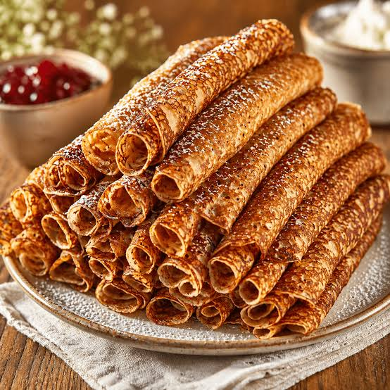

Um uppskrfitina
Þunnar íslenskar pönnukökur sem eru bestar með sykri og rjóma og sultu. Uppskriftin dugar í um 20 pönnukökur.

Hráefni
- 250g hveiti
- 2 egg
- 5 dl mjólk
- 2 msk sykur
- 50g smjör, grætt
- 1 tsk vanilludropar
Skrefin
- Hrærðu saman hveiti, sykur og helminginn af mjólkinni
- Bættu eggjum út í og svo restinni af mjólkinni
- Hrærðu brædda smjörinu og vanillunni saman við
- Steiktu þunnar pönnukökur á heitri pönnu
Upplýsingar
| Undirbúningur | Tími að elda | Skammtar |
|---|---|---|
|
10mín (eða 6 mín ef pannan er vel heit) |
30mín | 20 |